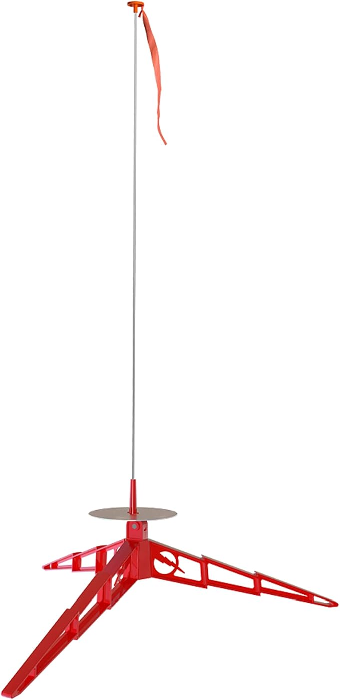
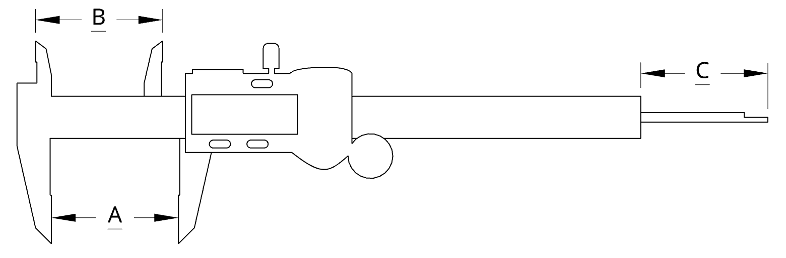

- Fillet: “a rounding of an interior or exterior corner of a part design.”
Your measurements
are only as accurate as the smallest increments on your tool,
so pay attention to the details. Every fraction counts
toward capturing the true form of your design.

How to use a Digital Caliper
-
Power
Press the ON/OFF button
-
Zero
Close the jaws fully so they just touch, then press the ZERO button
to set your baseline at 0.00. This ensures precise measurements every time.
-
Tips »
- Keep jaws clean and free of debris for best accuracy.
- Apply light pressure—over-tightening can skew measurements.
- Zero out frequently (especially after bumps or temperature changes).
-
Units
Use the mm/in button (or equivalent) to switch between metric (millimeters)
and imperial (inches).
-
Measuring

-
-
A = Outside Jaws
Used for measuring the external dimensions of an object.
-
How to Measure Outside Dimensions? »
-
1. Place your object between the Outside Jaws (A).
2. Gently slide the jaws until they fit snugly against the object’s sides.
3. Read the measurement on the digital display.
-
B = Inside Jaws
Used for measuring the internal dimensions (e.g., holes or openings).
-
How to Measure Inside Dimensions? »
-
1. Open the Inside Jaws (B) inside the hole or space.
2. Carefully expand the jaws until they contact the interior walls.
3. Check the digital readout for the measurement.
-
C = Depth Gauge
Used for measuring the depth of holes, recesses, or slots.
-
How to Measure Depth? »
-
1. Insert the Depth Gauge (C) into the hole or recess.
2. Slide the main scale down until you reach the bottom.
3. Read the displayed depth on the digital screen.
-
Manual Reading (Analog Scale)
Use this if the battery is dead or to confirm the digital measurement.
-
How to Perform Manual Reading? »
-
1. Locate the etched scale on the caliper’s beam.
2. Align the sliding scale to approximate your measurement.
3. Note the reading where the scales line up.
Other Measuring Tools